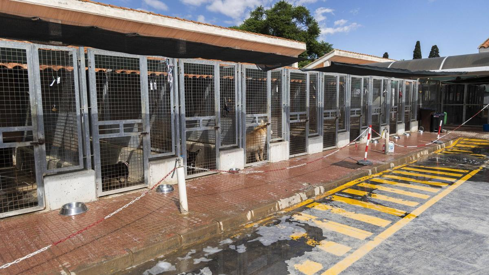

Equipo de comunicación
12El Refugio Esperanza es una protectora sin ánimo de lucro nacida en e barrio de Roces, en Gijon. Apostamos por el rescate responsable y por encontrar un hogar definitivo y feliz a cada animal
Nuetras instalaciones, en pleno Camino de las Huertas, reciben cada semana a decenas de voluntarios y familias interesadas en adoptar
Fundación
Animales rescatadaos
Adopción este año
Voluntarios activos
Un breve recorrido por nuestras instalaciones de la mano del equipo